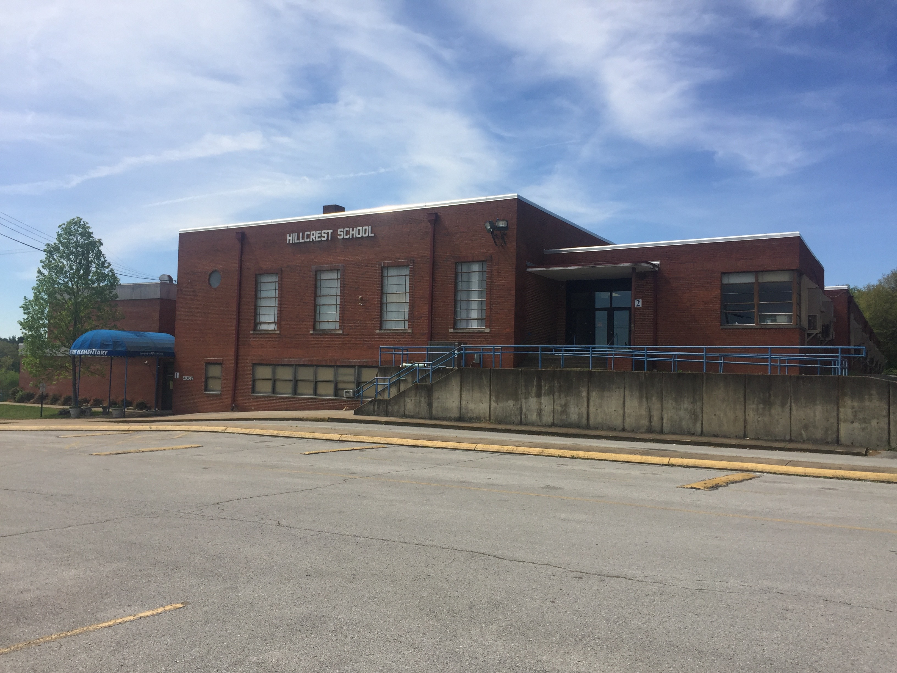
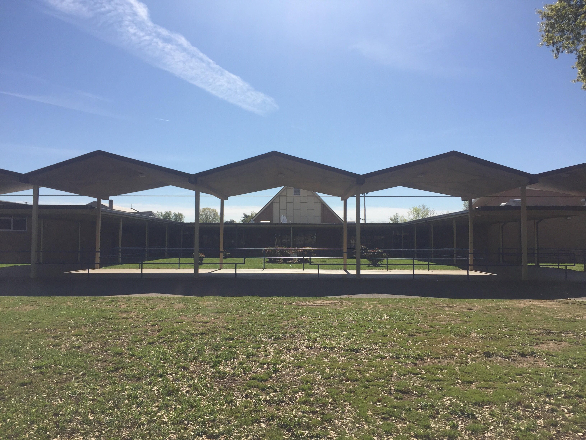
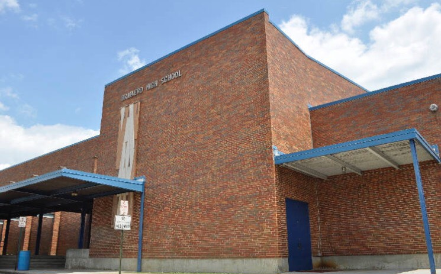

Click the link above to view or print my resume.
During my Engineering career, I accumalated 5 years of experience in the Nuclear Industry.
Design work includes projects for Watt Bar Nuclear Power Plant, Browns Ferry Nuclear Power Plant, Sequoyah Nuclear Power Plant,
and Bellefonte Nuclear Power Plant which as since been decommission.
 Watts Bar Nuclear
Watts Bar Nuclear
 Browns Ferry Nuclear
Browns Ferry Nuclear
 Sequoyah Nuclear
Sequoyah Nuclear
 Bellefonte Nuclear
Bellefonte Nuclear
Currently,I'm working in the Education Department with the City of Chattanooga, and Hamilton County Department of Education.
During the last 3 years, I have worked with students from Hillcrest Elementary School, Dalewood Middle School, and
Brainerd High School. Also, mentoring and tutoring students in afternoon programs at our local Youth and Family Developement Center, here in Chattanooga, TN.
HillCrest Elementry
Dalewood Middle School
Brainerd High School
In the near future, I plan to spend more time coding and becoming fluent in computer language, so that it can be used to build better websites,
for myself and others.